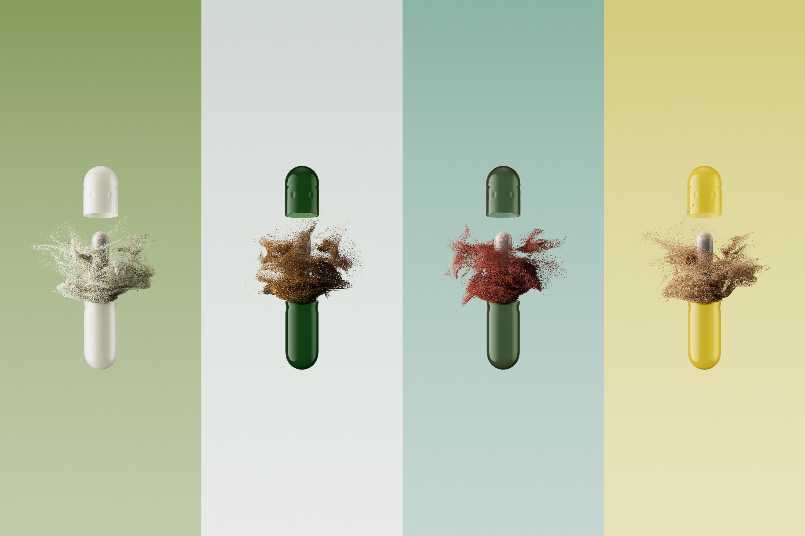
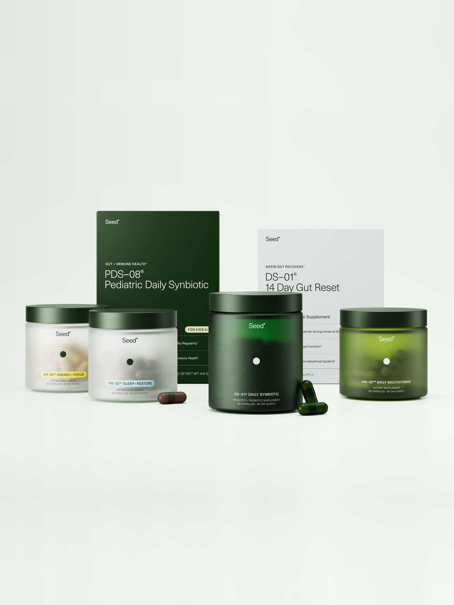

Seed
Set of product imagery and motion developed for Seed, following their recent rebrand and product expansion.
The goal was to streamline and elevate their entire portfolio imagery to be used in key touchpoints, from homepage to social media and activations. With a special focus in the newly added products, the visuals aim to convey a sense of care and scientific precision, creating an interesting balance with their lived-in photography style.
- Client: Seed
- Year: 2025
- Creative Direction: Seed
- 3D and Motion: Pedro Veneziano